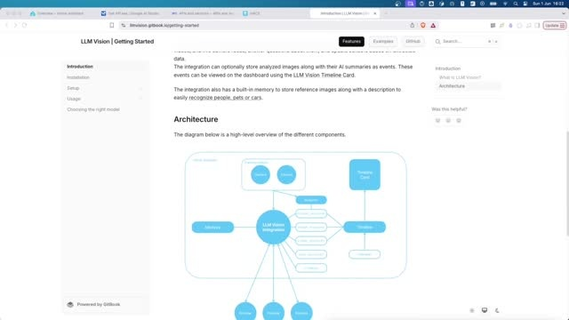
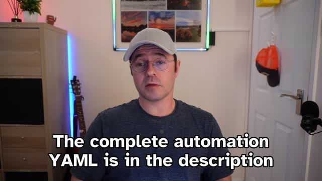
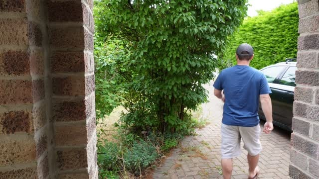
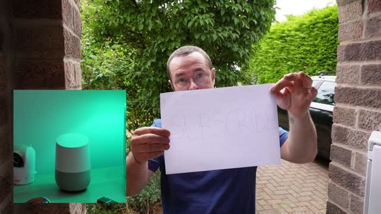

Smart Doorbell descriptions
Note: This is generated from a transcript from one of my YouTube videos
Introduction
Elevate your smart home doorbell experience with a truly innovative integration: LLM Vision. This powerful tool allows your Home Assistant setup to “see” and describe who is at your door using advanced AI Vision. Imagine hearing “A devilishly handsome, definitely not middle-aged man is at the door” instead of a generic chime.
While it might seem like a novelty at first, the practical utility of this feature quickly becomes apparent. No more wondering “Ding Dong, they have already gone” or “Ding Dong, check the camera, their face is hidden.” This integration provides immediate, descriptive insights, making your smart home even more intelligent and responsive.
Google Cloud and Gemini API Setup
To begin, you need to set up Gemini within Google Cloud. This process is straightforward and forms the foundation for your AI vision capabilities. Navigate to the Google Cloud Console and create a new project specifically for this integration.
Once your project is established, enable the Gemini API. This crucial step activates the AI functionalities required for the doorbell descriptions.
Next, obtain an API key from AI Studio. Visit AIStudio.google.com/app/apikey to generate your key. Ensure you select the Google Cloud project you just configured. Keep this API key accessible, as it will be needed shortly for the integration.
LLM Vision Integration Installation
The next step involves installing the LLM Vision integration itself. This is available through HACS, the Home Assistant Community Store. Comprehensive documentation for LLM Vision can be found at llmvision.gitbook.io, which also includes a blueprint for quick setup.
While a blueprint is available, an image-based approach was chosen for quicker processing compared to video. The installation process is efficient: first, install it from HACS like any other custom integration. After installation, restart Home Assistant.

Following the restart, you can install LLM Vision as a standard integration directly through the Home Assistant interface. During this setup, paste the API key obtained from AI Studio and select Google as your provider.
Privacy Considerations
Before proceeding, it is important to address privacy concerns. Some users may be hesitant about images being sent to the cloud, given that this is a remote LLM and not hosted locally. This means images are uploaded to Google servers for processing.
In a typical setup, this concern can be mitigated. For instance, if children are not expected to ring the doorbell, their images would not be captured. The automation can be configured to trigger only when the doorbell button is pressed, not merely when motion is detected in front of the camera, further enhancing privacy control.
Integrating LLM Vision into Home Assistant Automation
The real power of LLM Vision comes to life when integrated into your Home Assistant automations. An existing automation might already capture a picture from your video doorbell and send a notification with the image to your phone when the button is pressed. This automation could also announce the doorbell ring throughout the house on various Google Home devices, which is useful if you are in another part of the house.
The goal is to enhance this existing automation by adding the capability to describe what the doorbell camera sees. The core of this functionality is the llmvision.image_analyzer action, provided by the integration.

The configuration for this action uses specific parameters for optimal results. The max_tokens parameter is set to 50 to ensure concise responses, with a token roughly equating to a word. The temperature is set to 0.2 for more consistent results, as values closer to 0 yield more precise outputs, while values closer to 1 encourage more creative responses. The Gemini 2.0 Flash model is utilized, primarily for its effectiveness and cost-free nature.
Prompt Engineering for AI Vision
The most fascinating aspect of this setup is prompt engineering. This is where you instruct the AI precisely what to look for and how to respond. A carefully crafted prompt can handle various common scenarios effectively.
Consider this example prompt, which has yielded excellent results: “This is a picture from a video doorbell. If there is nobody there say they have already gone and nothing else. Otherwise if they’re walking away say they have already gone and nothing else. Otherwise if they’re faces hidden say check the camera, they’re faces hidden and nothing else. Otherwise if none of the above true then say a adjective, man slash woman who looks like famous actor which I thought was quite fun. Holding whatever they’re holding is at the door.”

Being explicit with phrases like “and nothing else” prevents the AI from generating overly long or multiple responses. This approach is particularly effective for common doorbell interactions. People often ring and immediately depart, perhaps dropping off a package or being in a hurry.
Additionally, the prompt accounts for situations where a person’s face might be obscured by a hood or mask, providing valuable information before you open the door. The results have been surprisingly accurate and entertaining. After some testing, the prompt was tweaked from consistently identifying a “middle-aged man” to now humorously stating “I look like Matt Damon.” This personalized touch has become a favorite feature of the smart home setup, transforming a simple doorbell announcement into a descriptive and useful message.
Customization and Community Engagement
If you are considering implementing this for your own smart home, it is highly recommended to start with a basic setup. From there, you can fine-tune the prompts to align with your specific needs and preferences. You might desire more detailed descriptions, or perhaps you prefer the AI to focus on particular elements like packages or uniforms.

Consider experimenting with different creative prompts to see what unique descriptions you can generate. Share your innovative prompt ideas in the comments below.
Conclusion
Integrating LLM Vision with your smart doorbell and Home Assistant offers a significant upgrade to your smart home’s capabilities. By leveraging AI Vision, you gain descriptive, real-time insights into who is at your door, enhancing both convenience and security. The setup process, from Google Cloud configuration to prompt engineering, is manageable and highly customizable. This innovative approach transforms a simple doorbell ring into an intelligent, informative interaction, making your smart home truly smarter.
Links:
Video
You can watch the full video on YouTube here:
Transcript
Support me to keep making videos

If you like the work I’m doing, please drop a like on the video, or consider subscribing to the channel.
In case you’re in a particularly generous mood, you can fund my next cup of coffee over on Ko-Fi
The links from some of my videos are affiliate links, which means I get a small kickback at no extra cost to you. It just means that the affiliate knows the traffic came from me.